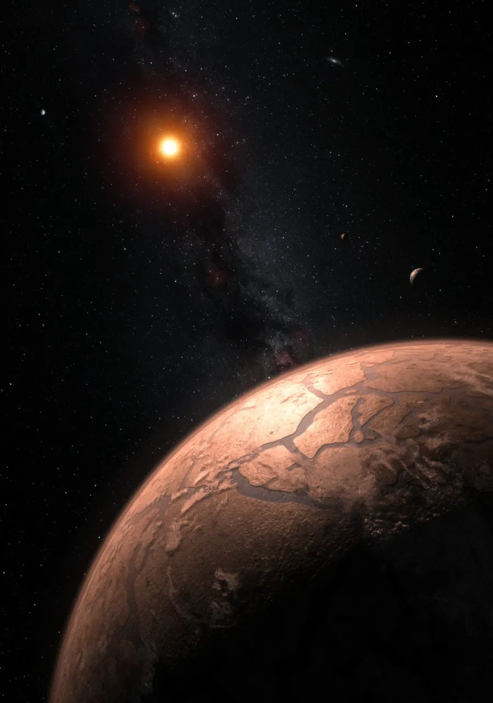

22. Mai 2017
Umlaufzeit von TRAPPIST-1 h bestätigt: Planeten bilden eine Resonanzkette
Für den äußersten Planeten TRAPPIST-1 h gab es zunächst nur eine Schätzung der Umlaufzeit. Aus dem regelmäßigen Muster der Umlaufzeiten der sechs inneren Planeten, einer Bahnresonanz, berechnete ein Team sechs mögliche Werte, von denen nur einer mit den vorhandenen Daten vereinbar war. Beobachtungen mit dem Kepler-Weltraumteleskop bestätigten ihn: Der Planet umrundet seinen Stern alle 19 Tage.
TRAPPIST-1 h liegt jenseits des äußeren Rands der habitablen Zone und ist wahrscheinlich zu kalt für Leben, wie wir es kennen. Die Resonanzkette deutet nach Ansicht der Forschenden darauf hin, dass die Planeten gemeinsam nach innen gewandert sind.
Quelle: NASA/JPL: "Astronomers Confirm Orbital Details of TRAPPIST-1h.", 22.05.2017